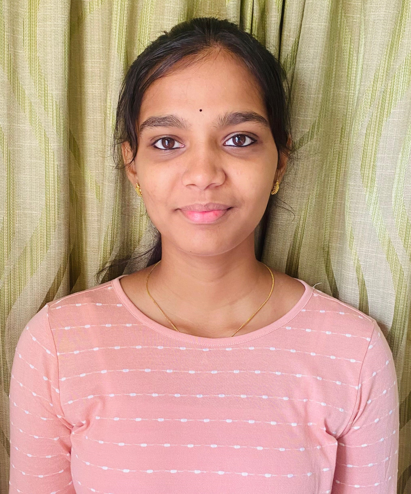
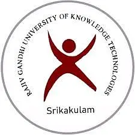
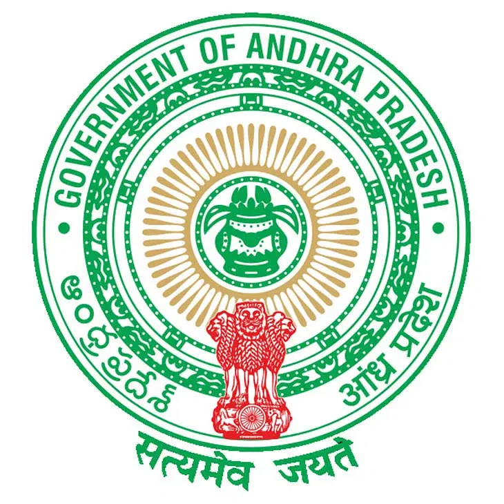

I’m known for my strong problem-solving abilities, as I enjoy approaching challenges from different angles and collaborating with team members to find innovative solutions. I’m a quick learner, always seeking opportunitues to expand my knowledge and stay up-to-date with the latest industry trends and technologies. In addition to my technical skills, I possess excellent communication skills and interpersonal skills which enable me to effectively collaborate with diverse teams and build strong professional relationships. I’m currently seeking opportunities to kick-start my career and contribute to a forward-thinking organization.
Skills
JAVA
HTML
CSS
JavaScript
Git
SpringBoot
Mysql
Projects
Music Player
Coding Ninjas
April 2024-Present
I'm developing this project as a part of certification course on
Java Full Stack Web Development course with Spring Boot from Coding Ninjas.
This project is a user interface for a music player, built using HTML and CSS.
The interface allows users to interact with and control the playback of music
tracks.The design is clean and user-friendly, making it easy for users to
navigate and control their music.This front end serves as the foundation for
a fully functional music player, which can be integrated with backend
technologies to play actual music files. Currently adding functionalities
using JavaScript.
Resume Portfolio
Coding Ninjas
April 2024-May 2024
I developed this project as a part of certification course on Java Full Stack Web
Development course with Spring Boot from Coding Ninjas. This project is a dynamic
resume developed using HTML and CSS. It showcases my skills and qualifications in
a visually appealing and professional manner

Customer Churn Analysis
RGUKT SKLM
June 2023- July 2023
As a part of my curriculum, I developed this Data Science project. The goal of
this project is to analyse bank customer churn, build a predictive model to
identify potential churners and help the bank offer targeted promotions.
Algorithms used in this project are Logistic Regression, SVM,
Decision Tree Classifier, Random Forest Classifier
Education
B.Tech, CSE Department
RGUKT, IIIT Srikakulam
November 2021-May 2025
I am currently pursuing a B.Tech in Computer Science and Engineering at Rajiv Gandhi
University of Knowledge and Technologies, where I have maintained a CGPA of 9.18 and
have developed a solid foundation in both theoretical and practical aspects of software
development. With a CGPA of 9.18, I have demonstrated my commitment to academic excellence.
Mastery of foundational subjects like Mathematics, Probability & Statistics and Programming.
Advanced expertise in Data Structures, Algorithms, and Database Management Systems.
Specialized in Artificial Intelligence, Machine Learning, and Cryptography. Applied
knowledge in software testing, digital image processing, and web technologies.
Ready to apply skills to real-world challenges with innovation and a commitment to
lifelong learning in computer science and technology.
Pre-University Course
RGUKT, IIIT Srikakulam
September 2019-October 2021
In my pre-university course, I pursued the MBiPC group, comprising Mathematics,
Physics, Chemistry and Biology, supplemented by Information Technology (IT).
Additionally, I gained proficiency in languages Telugu and English. I excelled
in my PUC studies, achieving a decent CGPA of 9.52. In addition to my academic
pursuits, I actively participated as cultural events host and co-ordinator and
successfully organised and hosted various cultural events in our college. I
also dedicated my time to attending an NSS camp, contributing to community
service and fostering leadership qualities.

Secondary School Education
ZPHS, Gajuwaka
April 2018-March 2019
In the 10th board exams, I made history at ZPHS, Gajuwaka,
by becoming the second student to achieve a perfect 10-point score.
This remarkable accomplishment also earned me the title of Mandal topper
and the esteemed Prathibha award, highlighting my consistent dedication
to academic excellence.
Portfolio


Contact
Get In touch
Feel free to reach out to me via email or by phone for any inquiries,
collaborations, or networking opportunities. You can also connect with me on LinkedIn to
stay updated on my professional journey and potential collaborations. I welcome any
discussions regarding my academic achievements, projects, or future endeavours.
Looking forward to connecting with you!
My Address
Visakhapatnam, India
9440149847
bhavyasree1504@gmail.com